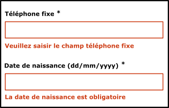
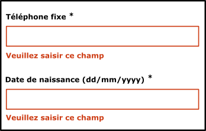

Critères incontournables pour la conception
1. Donner un titre aux pages
Cible : tout le monde et en particulier les personnes déficientes visuelles.
Quand : dès la conception et pendant le développement.
Description :
Donner à chaque page un titre qui lui est spécifique et qui reflète son contenu ou sa fonction (balise <title>).
Le titre de la page est le premier élément lu par la synthèse vocale, il doit permettre d’identifier formellement la page sur laquelle on se trouve.
À vérifier :
- Bien qu’il n’y ait pas de règle, en général (ouverture de nombreux onglets de multiples applications), on va de l’information la plus spécifique vers la moins spécifique (ex : nom de la page courante - nom du site). Pour le fenêtrage d’une multitude d’applications, le contexte d’utilisation est différent ; dans ce cas, on préférera aller de l’information la moins spécifique vers la plus spécifique.
- Lorsque le contenu de la page est modifié dynamiquement (affichage du résultat d’une recherche, erreurs dans un formulaire, action utilisateur ajoutant du contenu…), le titre de la page doit refléter cette modification du contenu.
Exemple valide :Accueil - Espace client Orange
Exemple non-valide :Accueil
2. Donner des titres aux rubriques
Cible : tout le monde et en particulier les personnes déficientes cognitives, ayant des difficultés pour lire ou déficientes visuelles.
Quand : dès la conception, à la rédaction du contenu et pendant le développement.
Description :
Identifier les balises de titres à utiliser (balises HTML h1 jusqu’à h6) pour structurer le contenu des pages.
Les personnes malvoyantes naviguant à l’aide d’un lecteur d’écran peuvent accéder à la liste des titres de la page pour naviguer rapidement.
Tout comme dans un fichier Word, il est possible d’utiliser la table des matières si des titres ont correctement été positionnés à l’intérieur du document.
À vérifier :
- Les titres doivent être pertinents, refléter la structure de l’information contenue dans la page.
- Il ne doit pas exister de saut dans la hiérarchie des titres (on ne passe pas directement d’un titre
h2à un titreh4). - On peut mettre plusieurs
h1par page (se limiter tout de même à deux dans la majorité des cas).
Exemple valide :
Un titrage de page cohérent et pertinent :
(Titre 1) Accueil - Orange
(Titre 2) Les actualités
(Titre 2) La fibre arrive !
(Titre 3) Êtes-vous éligible ?
3. Assurer un contraste suffisant entre texte et fond
Cible : tout le monde, en particulier les utilisateurs sur mobile et tablette, les personnes malvoyantes, éprouvant des difficultés de lecture ou avec un déficit d’attention et les seniors.
Quand : dès la phase de conception et lors du développement.
Description :
Le niveau de contraste entre le texte et l’arrière-plan doit être suffisamment élevé.
Un niveau de contraste insuffisant sera préjudiciable pour les utilisateurs ayant des difficultés visuelles ainsi que pour les utilisateurs de mobiles et tablettes se trouvant dans un environnement très lumineux.
Exemple non-valide :
Le texte « film | 20h40… » ne présente pas un contraste suffisant. Celui-ci ne sera pas lisible par tous les utilisateurs.

À vérifier :
- Le contraste entre la couleur du fond et celle du texte doit être 4.5:1 minimum, et ceci également pour du texte sous forme d’image porteuse d’information.
- Pour des applications principalement utilisées en web mobile ou en mobilité, le niveau de contraste des principaux éléments doit être de 7:1 afin d’assurer une bonne lisibilité pour tous.
- Les liens doivent être facilement identifiables par rapport au reste du texte.
Outil :
L’application Colour Contrast Analyser permet de mesurer rapidement des niveaux de contraste de couleurs (gratuit pour Mac et Windows).
4. Ne pas utiliser la couleur ou l’information sensorielle comme seule source d’information
Cible : tout le monde, en particulier les daltoniens et plus généralement les personnes malvoyantes ou ayant une déficience cognitive, auditive et les seniors.
Quand : dès la phase de conception et lors du développement.
Description :
Ne pas utiliser la couleur ou une information sensorielle (forme, taille, son, orientation, localisation visuelle…) comme la seule façon de véhiculer de l’information, d’indiquer une action, de solliciter une réponse ou de distinguer un élément. L’information fournie par un changement de couleur ou une information sensorielle doit être complétée par une information textuelle (alternative) ou/et structuration sémantique.
Exemple valide :

Exemple non-valide :

Cet exemple n’est pas valide, car l’information est transmise uniquement par la couleur.
À vérifier :
- Faire une capture d’écran et la passer en noir et blanc. La perte des couleurs ne doit pas entraîner de difficulté dans la navigation, ni provoquer de perte d’information.
- Couper le son, le niveau d’information doit rester identique.
5. Définir des équivalents textuels
Cible : les personnes déficientes visuelles, les personnes malentendantes ou déficientes cognitives et les moteurs de recherche.
Quand : dès la conception et pendant le développement.
Description :
Mettre en place des alternatives textuelles pour tous les éléments informatifs non-textuels (alternatives aux images, icônes). De même, prévoir des scripts ou des sous-titres pour les contenus audio ou vidéo.
Exemple :
Dans la capture ci-dessous, il faudrait par exemple prévoir dès la conception les textes alternatifs pour chaque bouton :
- « menu »,
- « réglages »,
- « chaîne précédente »
- « couper le son »
- …

6. Assurer la visibilité du focus
Cible : tout le monde et en particulier les personnes déficientes visuelles, motrices, cognitives et en mobilité.
Quand : lors de la conception graphique et lors du développement.
Description :
La position du focus clavier doit être visible par tous les utilisateurs. Par défaut, le navigateur entoure l’élément avec des pointillés ou un cadre de couleur. Ce comportement peut être remplacé pour être rendu plus visible mais ne doit pas être supprimé.
Veiller à fournir un niveau de contraste suffisant (cf. mesurer le niveau de contraste des couleurs). Les utilisateurs qui naviguent à l’aide du clavier (touche TAB) ont besoin de connaître la position du focus à tout moment.
L’effet visible à la prise du focus doit être étudié dès la conception graphique au même titre que l’effet visible au survol du pointeur de la souris.
Exemples valides :
Dans les captures d’écran suivantes, le focus est positionné sur le lien « 209 SMS/mois ».
La première capture présente le comportement par défaut (focus représenté par des pointillés).
Dans la seconde capture, les pointillés ont été supprimés, mais un encadré permet d’indiquer de manière explicite l’emplacement du focus.

7. Agrandissement de la taille du texte
Cible : tout le monde et en particulier les personnes déficientes visuelles, en mobilité et seniors.
Quand : lors de la conception graphique et principalement lors du développement.
Description :
La taille du texte doit pouvoir être multipliée par 2 (zoom du texte à 200% depuis les réglages du navigateur). À ce niveau de zoom, la présentation de la page peut être altérée, mais l’information doit rester lisible (pas de texte tronqué, ni superposé).
Bien que ceci doive être pris en compte pendant la phase de développement, on peut identifier les zones de l’écran qui doivent ou non s’agrandir en même temps que la taille du texte dès la phase de conception graphique. Par ailleurs, certains choix de design peuvent ou non faciliter la mise en place de ce critère lors du développement, il est donc important d’y réfléchir dès le départ.
Exemple :
La capture ci-dessous montre une page avec un zoom à 100%.
Exemple valide :
Avec zoom du texte à 200%.
Exemple non-valide :
Avec zoom du texte à 200%. Ici la hauteur de l’élément contenant le texte n’a pas été rendue variable en fonction de la taille des caractères.
8. Permettre le contrôle des animations
Cible : les personnes malvoyantes, les personnes éprouvant des difficultés de lecture, d’attention ou de compréhension, les personnes épileptiques.
Quand : lors de la conception du service et lors de la conception graphique.
Description :
Tout contenu en mouvement, mis à jour, clignotant doit pouvoir être stoppé, caché ou mis en pause par l’utilisateur.
Par ailleurs, éviter autant que possible les flashs lumineux et les changements brusques de luminosité (cf. Le logo des JO provoque des crises d’épilepsie).
Exemple :
Un carrousel qui défile automatiquement doit se mettre en pause au survol de la souris ou lorsqu’il reçoit le focus.
Il est également possible d’ajouter un bouton « pause » directement dans l’interface.
9. Libellé des liens et des boutons
Cible : tout le monde et en particulier les personnes déficientes visuelles, cognitives ou ayant un déficit d’attention.
Quand : lors de la conception du service et lors de la conception graphique.
Description :
Les libellés des liens et des boutons doivent être suffisamment explicites.
Dans les cas exceptionnels où ce n’est techniquement pas possible, prévoir quand même un libellé explicite qui sera utilisé par la synthèse vocale (et les autres technologies d'assistance).
Exemple valide :
« découvrez nos offres »
Exemples non-valides :
« cliquez ici »
« en savoir plus »
10. Permettre la navigation au clavier
Cible : tout le monde, en particulier les personnes souffrant de handicap moteur ou visuel et en mobilité.
Quand : lors de la conception du service et lors du développement.
Description :
Toutes les fonctionnalités doivent être utilisables à l’aide du clavier uniquement. Le focus doit pouvoir être déplacé sur tous les éléments cliquables (à l’aide de la touche Tab).
Par ailleurs si des fonctionnalités sont spécifiques pour la souris (glisser-déposer, menu apparaissant au clic droit…), faire en sorte que celles-ci soient également disponibles via un autre moyen ailleurs dans l’interface (bouton, icône, menu…).
Voir la façon de naviguer au clavier dans un navigateur web.
Exemple :
Dans un webmail, si un clic droit sur le dossier « Corbeille » permet d’accéder à un menu pour vider la corbeille, cette option doit être également disponible via un bouton « Vider la corbeille » ailleurs dans l’interface ou depuis un menu déroulant accessible au clavier.
11. Rendre utilisables les formulaires
Cible : tout le monde et en particulier les personnes déficientes visuelles.
Quand : lors de la conception et lors du développement.
Description :
Chaque champ de formulaire doit être accompagné d’un libellé permettant d’identifier le rôle du champ, le type de donnée et le format attendu. Ce libellé doit être proche visuellement du champ afin qu’on fasse facilement le lien entre eux (notamment pour les utilisateurs de zoom ou de loupe logicielle, voire sur mobile). Les champs en erreur doivent pouvoir être identifiés et, si besoin, suggérer une correction. Ceci s’applique aux champs de saisie, mais également aux autres types de champs (liste déroulante, bouton radio, case à cocher…). Au niveau du développement, ce libellé sera associé au champ de formulaire pour faciliter la navigation à l’aide d’un lecteur d’écran.
Exemple valide :
Exemple non-valide :
Dans certains cas, il semble inutile d’accompagner le champ de formulaire d’un libellé (champ de recherche accompagné d’un bouton en forme de loupe par exemple). Dans ce cas prévoir tout de même un libellé. Celui-ci ne sera pas affiché à l’écran mais sera tout de même associé au champ de formulaire lors du développement pour faciliter la navigation à l’aide d’un lecteur d’écran.
Enfin les libellés des messages d’erreur doivent être explicites.
Exemple valide :

Exemple non-valide :

12. Éviter les boites de dialogues et l’ouverture de nouvelles fenêtres
Cible : les seniors, les personnes déficientes cognitives, malvoyantes ou en mobilité.
Quand : lors de la conception et lors du développement.
Description :
Éviter autant que possible les actions qui ouvrent une nouvelle fenêtre (ou un nouvel onglet) du navigateur. Si un lien déclenche l’ouverture d’une nouvelle fenêtre, il faudra lors du développement faire en sorte que le texte « nouvelle fenêtre » soit vocalisé par les lecteurs d’écran, afin que les personnes malvoyantes sachent qu’une nouvelle fenêtre s’ouvre.
De même éviter le recours systématique aux boîtes de dialogue pour présenter des informations dans les pages (présentation du service …). Celles-ci posent souvent des problèmes d’accessibilité pour les personnes qui naviguent au clavier ou au lecteur d’écran, problèmes qui nécessiteront une attention particulière lors de la phase de développement.
Exemple non-valide :
Dans l’exemple ci-dessous le recours à une boîte de dialogue n’est pas justifié. L’utilisation d’une page web standard permettrait :
- de laisser plus d’espace au contenu (en supprimant les marges autour de la boite de dialogue),
- de pouvoir utiliser le bouton « Précédent » du navigateur pour revenir en arrière lors de la navigation entre les différentes pages de la boite de dialogue,
- de faciliter l’affichage sur les petits écrans,
- d’éviter des problèmes d’accessibilité pour les personnes qui naviguent à l’aide du clavier ou à l’aide d’un lecteur d’écran,
- d’alléger le poids de la page et le temps de chargement, car dans cet exemple la page derrière la boite de dialogue doit être chargée.

13. Fournir des liens d’évitement
Cible : utile pour les utilisateurs de mobile et tablette, les personnes déficientes visuelles et les personnes souffrant de handicap moteur ou en mobilité.
Quand : dès la phase de conception et lors du développement.
Description :
Fournir des liens d’évitement du type « Aller au contenu » sur chaque page. Ceux-ci facilitent la navigation pour les personnes utilisant le clavier, en mobilité ou navigant à l’aide d’un lecteur d’écran. En cas de fortes contraintes, les liens peuvent être masqués à l’écran et apparaître uniquement lors de la navigation au clavier.
Exemple :
Des liens d’évitement (« Aller à la navigation », « Aller au contenu ») sont disponibles sur ce site.
Pour les faire apparaître, placer le focus en haut de la page en cliquant sur la barre d’adresse de votre navigateur par exemple, puis appuyer plusieurs fois sur la touche Tab.

14. Identifier et conserver la cohérence des regroupements et des différentes régions de la page
Cible : tout le monde et en particulier les personnes déficientes visuelles, cognitives ou ayant des troubles de l’attention.
Quand : lors de la conception.
Description :
Fournir des moyens d’identifier et de distinguer visuellement les différentes parties de la page et assurer la cohérence de ces régions ou regroupements dans toutes les pages.
À vérifier :
- S’assurer que les mécanismes de navigation sont toujours situés au même endroit dans un ensemble de page.
- S’assurer que les composants et les regroupements qui ont la même fonction, sont identifiés (visuellement) de la même façon et, dans la mesure du possible, respecter l’apparence classique de ces éléments pour ne pas perturber l’utilisateur habitué à un aspect spécifique de ceux-ci (par exemple, les liens sont généralement soulignés…).
- S’assurer que les zones de la page sont clairement délimitées (bordures, filets, contraste suffisant…) ou qu’il y a un moyen de distinguer visuellement les groupes (sous-menu, liste déroulante…) ainsi que les différentes régions de la page.
Objectif utilisateur : Permettre aux utilisateurs d’identifier et localiser les éléments d’interface dans toutes les pages.
Exemple valide :

Ici, l’info bulle (tooltip) est délimitée par une bordure bien visible et suffisamment contrastée, permettant de bien identifier son contenu.
Exemple non-valide :

Il est très difficile d’associer les thèmes (« par région », « par genre »…) et les sous-thèmes en colonnes, d’autant plus que les filets horizontaux sont trop peu contrastés.
15. Situer explicitement la page dans le site et fournir plusieurs moyens d'y accéder
Cible : tout le monde et en particulier les personnes déficientes visuelles ou cognitives.
Quand : lors de la conception.
Description : Donner à l’utilisateur plusieurs moyens de situer et accéder à un contenu spécifique, localiser la page Web en cours de consultation dans un ensemble de pages. Lorsque la page est une étape dans un processus où les pages s’enchaînent les unes après les autres, ce critère peut être ignoré.
À vérifier : S’assurer que plusieurs systèmes permettent de situer et accéder à une page ou un contenu dans le site : un outil de recherche sur l’ensemble du site, un plan du site, un menu de navigation global, un fil d’Ariane…
Objectif utilisateur : Permettre à tous les utilisateurs de se repérer afin d’accéder plus facilement à l’ensemble du contenu du site.
Exemple valide : Le site propose, à la fois, une navigation principale complète et précise et un fil d’Ariane.
Exemple invalide : Une application offre un menu de navigation parcellaire et aucun autre moyen pour l’utilisateur de s’orienter dans les pages ou de repérer où se situe la page courante dans l’arborescence.
16. Éviter les captcha
Cible : tous les utilisateurs en particulier, les personnes déficientes visuelles.
Quand : lors de la conception et lors du développement.
Description :
Les captcha sont souvent la source de difficultés pour les utilisateurs. Si la mise en place d’un système anti-spam ne peut être évitée, il est souhaitable de s’orienter vers une solution plus souple pour l’utilisateur :
- Double authentification ;
- Champ de formulaire caché à laisser vide (technique du honeypot), non-visibles pour l’utilisateur ;
- Mise à disposition d'un support téléphonique afin de s'assurer que le client est une vraie personne ;
- Un contrôle permettant de s'assurer qu'une même combinaison IP/User agent ne tente pas de soumettre le formulaire plus de N fois par seconde.
Si aucune autre alternative n’est possible, il est indispensable de prévoir une alternative pour les captcha uniquement visuels ou sonores en proposant une combinaison de captcha :
- un captcha audio + visuel,
- des tests logiques (question dont la réponse est évidente, test mathématique simple…) + captcha visuel clasique
- …
17. Définir des zones sensibles de taille suffisante
Cible : tous les utilisateurs en particulier, les personnes souffrant de handicap moteur ou visuel et en mobilité.
Quand : lors de la conception et lors du développement.
Description :
Chaque zone sensible doit avoir une taille suffisante (9mm minimum de largeur et de hauteur).
Par ailleurs les zones sensibles doivent être suffisamment espacées les unes des autres (environ 2mm minimum).
18. Autoriser l'utilisation du zoom
Cible : tous les utilisateurs en particulier, les personnes déficientes visuelles.
Quand : lors du développement.
Description :
Le site ne doit pas interdire ou limiter l'utilisation du zoom (notamment sur les mobiles).
19. Permettre d'annuler le déclenchement des interactions gestuelles
Cible : tous les utilisateurs en particulier, les personnes souffrant de handicap moteur ou visuel et en mobilité.
Quand : lors du développement.
Description :
Lors d'une interaction gestuelle, l'action est déclenchée uniquement à la fin de l'interaction de plus l'action n'est pas déclenchée si l'élément déclencheur perd le focus.
20. Proposer une alternative aux gestuelles complexes
Cible : tous les utilisateurs en particulier, les personnes souffrant de handicap moteur ou visuel et en mobilité.
Quand : lors de la conception et lors du développement.
Description :
Pour chaque interaction gestuelle complexe, une alternative doit être disponible (par exemple une alternative non gestuelle ou simplifiée).
De même pour les interactions nécessitant un changement d'orientation de l'écran (basculement, rotation, secouement...).
21. Donner accès au contenu quelle que soit l'orientation de l'écran
Cible : tous les utilisateurs en particulier, les personnes souffrant de handicap moteur ou visuel et en mobilité.
Quand : lors de la conception et lors du développement.
Description :
L'accès au contenu ne doit pas dépendre de l'orientation de l'écran (portrait et paysage).